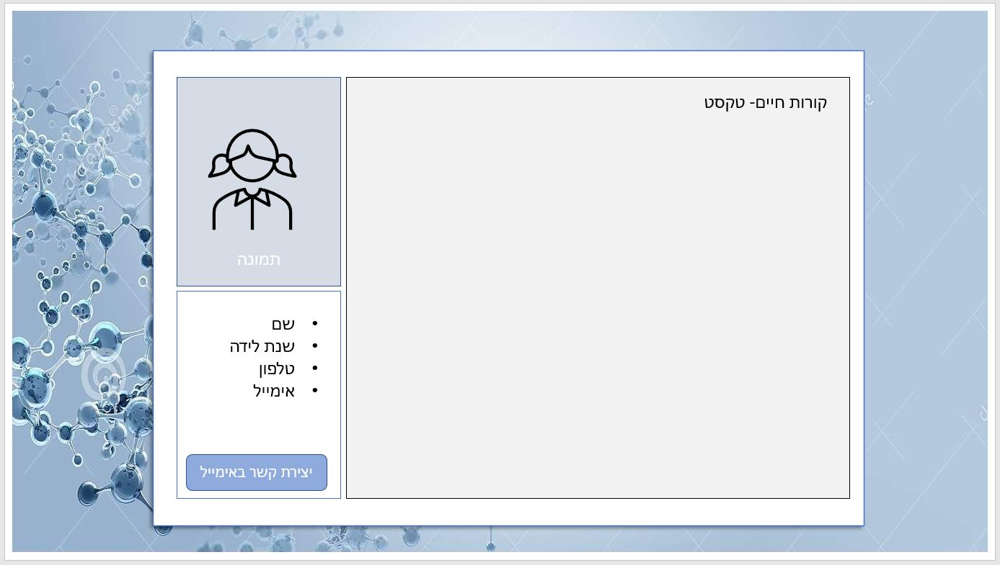
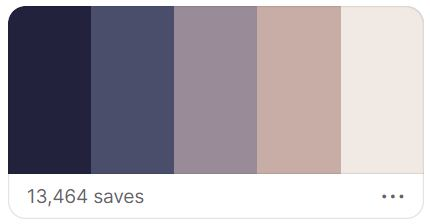
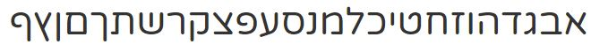
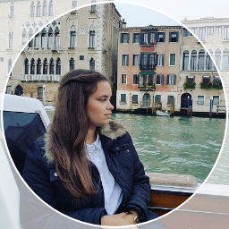

מטלה מספר 4- עמוד קורות חיים
שאלות הכוונה לתכנון UX:
קהל היעד של האתר- אנשים שמחפשים עובדים בתחומי מערכות מידע ופיתוח. חברות כוח אדם שמחפשות עובדים עבור חברות אחרות.
המטרה הראשית של האתר- להציג את עצמי, את היכולות שלי ואת ההישגיים שלי לאורך השנים בקריירה.
המטרות המשניות- להתנסות בבניית אתר קורות חיים.
הפעולות שאני רוצה שהמשתמש יבצע באתר הן קריאה של טקסט, שליחת מייל ישירות אליי או פנייה אליי באמצעות שיחת טלפון (קישור דרך האתר).
מדדי ההצלחה- האתר צריך להצליח להציג אותי בצורה הטובה ביותר שיגרום לאנשים אחרים לחשוב שכדאי לפנות אליי עם הצעות עבודה.
עולם התוכן אליו האתר מתייחס הוא עבודה, היי טק, מערכות מידע והנדסת תעשייה וניהול.
שאלות הכוונה לתכנון UI:
מענה על סעיפים א',ב',ג' ו-ד' על ידי שימוש בסקיצה:

סכמת הצבעים של האתר:

הפונטים של האתר:

תמונות שיהיו באתר:
